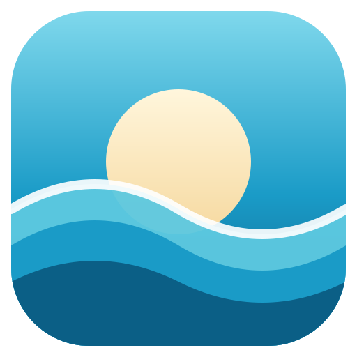
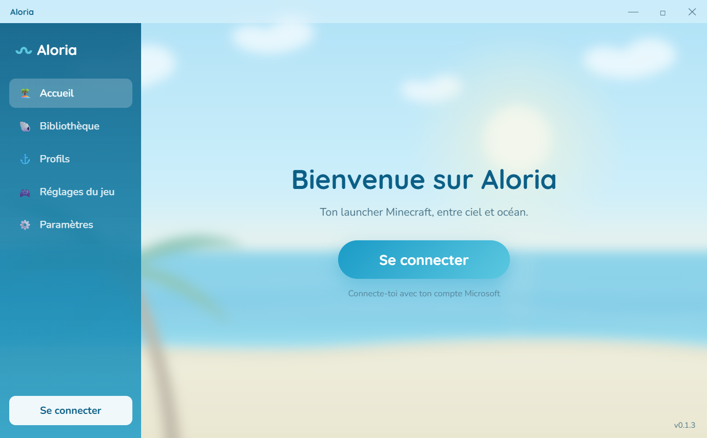
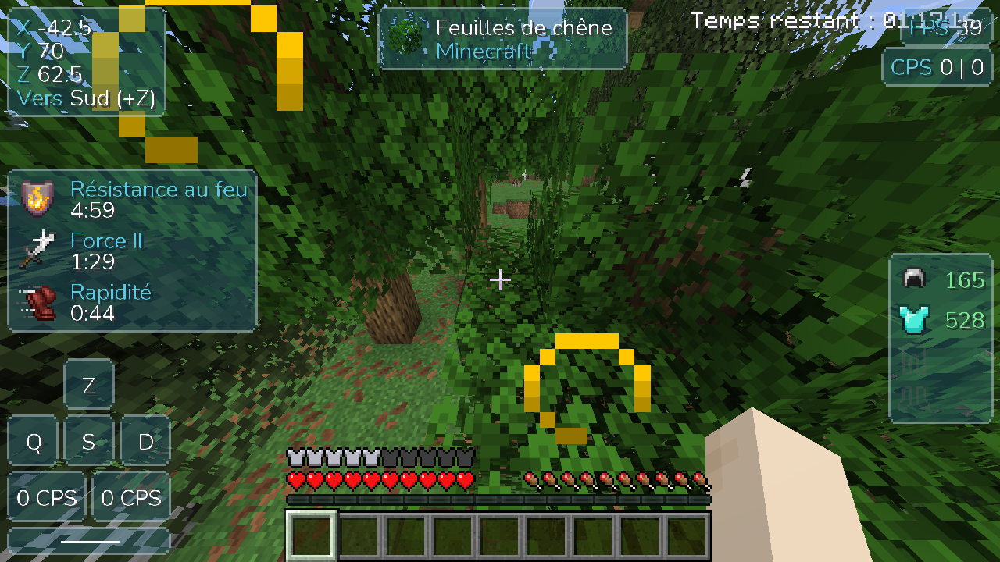

Connexion Microsoft
Connexion officielle et sécurisée, plusieurs comptes. Tes identifiants restent chiffrés sur ton PC.

AloriaTon launcher Minecraft, entre ciel et océan.
Télécharger pour WindowsIl faut un compte Microsoft qui possède Minecraft: Java Edition.

Un launcher léger, joli et pensé pour qu'on n'ait rien à configurer.
Connexion officielle et sécurisée, plusieurs comptes. Tes identifiants restent chiffrés sur ton PC.
Une version, un dossier et une quantité de RAM par profil, de la 1.8 aux dernières versions, avec Fabric en un clic.
Bibliothèque Modrinth intégrée : recherche, installation et dépendances automatiques.
Touches, son, champ de vision et options d'accessibilité réglés une fois, appliqués à tous tes profils.
Ta liste de serveurs te suit d'un profil à l'autre, et ton statut Discord montre à quoi tu joues.
Java est installé automatiquement, et le launcher se met à jour tout seul en arrière-plan.
Un HUD personnalisable, ajouté automatiquement à tes profils Fabric récents.

Clique sur Télécharger pour Windows et ouvre le fichier Aloria-Setup.exe.
L'installeur n'est pas signé (un certificat coûte cher). Si Windows SmartScreen s'affiche, clique sur Informations complémentaires puis Exécuter quand même.
Connecte ton compte Microsoft, crée un profil, et lance la partie. Le jeu se télécharge tout seul.
Oui, entièrement. Il faut seulement posséder Minecraft: Java Edition sur ton compte Microsoft.
Non. Aloria n'a pas de mode « crack » : il vérifie que ton compte possède le jeu, comme le launcher officiel.
La connexion passe par la page officielle de Microsoft : Aloria ne voit jamais ton mot de passe. Les jetons de connexion sont chiffrés sur ton PC et envoyés uniquement à Microsoft, Xbox Live et Mojang. Le code est public sur GitHub.
Parce que l'installeur n'est pas signé avec un certificat payant. C'est normal pour un petit projet : clique sur « Informations complémentaires » puis « Exécuter quand même ».
Pas pour l'instant : Aloria est disponible uniquement pour Windows.
Non, tes mondes, profils et comptes sont conservés dans %APPDATA%\.aloria.